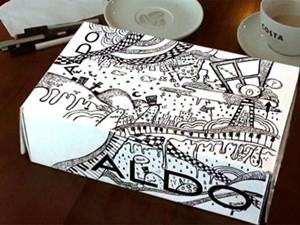
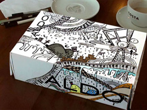
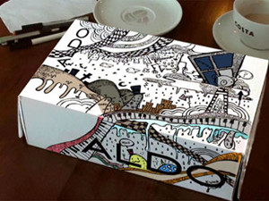
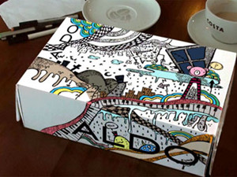
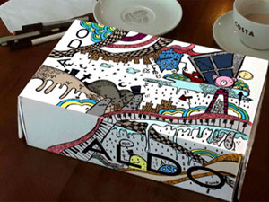
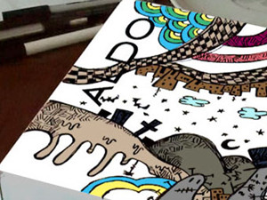
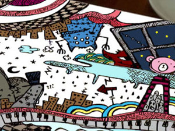
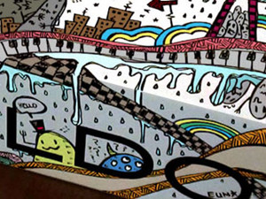
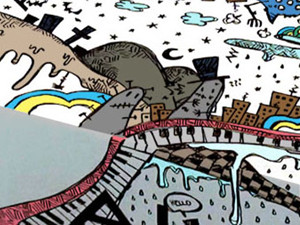

Illustration by EuN
Video and Music(part1) by Mark
Aldo 신발상자
몽땅 흰색이라 매우 바람직함 :)
전에 카페에서 끄작끄작 낙서한거
비디오로 레코딩&편집이랑 음악은 M군이 수고해줬다 XD 감샤!!!
요거 잼나다
이날 자연광 그대로 들어오는 카페에서 작업해서
화면밝기가 엄청나게 휙휙 변하는데 다음에는 실내에서 함 찍어보고싶당
완전 충동적으로 시작한 일인데
이 프로젝트를 M군이 너무 심각하게 받아들여서 미안시려웠음//
이 비디오의 뽀인트는
그림이 진행됨과 동시에 잽싸게 사라지는 쿠키들 ㅋㅋㅋㅋ
아래는 채색 과정샷 ↓









komkom!! :D